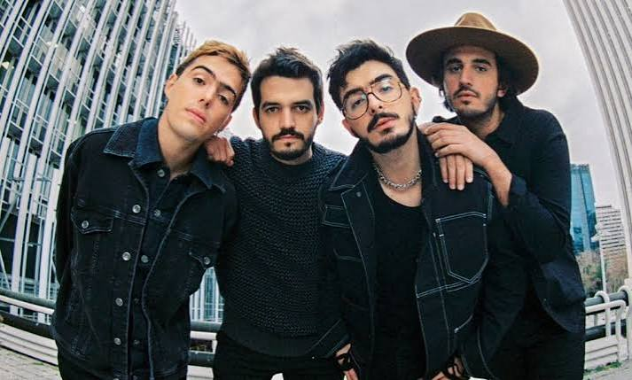
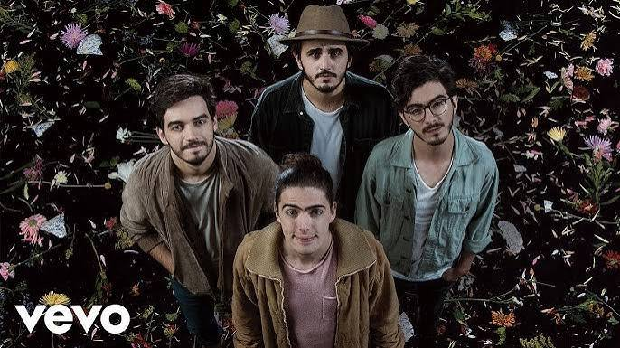

Morat es una banda colombiana formada en 2011 en Bogotá, cuyos cuatro integrantes —amigos desde la infancia— saltaron a la fama internacional en 2015 con Mi nuevo vicio junto a Paulina RUbió. Su estilo musical combina pop, folk y rock, con letras que abordan temas de amor, desamor y relaciones personales Orígenes: amigos desde la infancia Morat nació de la amistad de Juan Pablo Isaza, Juan Pablo Villamil, Simón Vargas y Martín Vargas, quienes se conocieron desde los cinco años mientras estudiaban en el Gimnasio La Montaña en Bogotá . Desde pequeños tocaban juntos, experimentaban con instrumentos y componían sus primeras canciones, lo que cimentó su química musical y personal . Primeros pasos y formación oficial Aunque tocaban desde niños, la banda comenzó a tomar forma en la adolescencia y luego en la universidad. En 2014 grabaron sus primeras sesiones en Bogotá y se presentaban en lugares pequeños como La Tea, donde poco a poco empezaron a atraer público propio . Su primer representante, Pedro Malaver, inicialmente los rechazó, pero tras escucharlos en vivo decidió apoyarlos al ver su potencial . El origen del nombre “Morat” El nombre proviene de La Morat, una finca a las afueras de Bogotá donde ensayaban en sus inicios. La propiedad pertenecía a un familiar del exintegrante Alejandro Posada . Antes se llamaban Malta, pero debieron cambiarlo al firmar con Universal Music porque ya existía una banda registrada con ese nombre . 2015: el salto a la fama El 17 de febrero de 2015 lanzaron Mi nuevo vicio, en colaboración con Paulina Rubio, tema que se convirtió en un éxito en España y México, logrando Disco de Platino Digital y varios números uno . Ese mismo año publicaron Cuánto me duele y más tarde Cómo te atreves, que los consolidó en España Wikipedia . Primer álbum y cambios en la banda (2016) En 2016 lanzaron su álbum debut Sobre el amor y sus efectos secundarios, que alcanzó el número uno en varios países hispanos y les valió una nominación al Latin Grammy como Mejor Artista Nuevo Wikipedia . Ese año, Alejandro Posada dejó la banda para estudiar arquitectura y fue reemplazado por Martín Vargas Wikipedia . Crecimiento internacional (2017–2020) Entre 2017 y 2020 lanzaron éxitos como: Amor con hielo (2017) Yo contigo, tú conmigo, con Álvaro Soler, parte de la banda sonora de Despicable Me 3 1 Besos en guerra, con Juanes (2017) 1 Cuando nadie ve (2018) 1 Origen: 1 Su segundo álbum, Balas perdidas (2018), los consolidó como una de las bandas más grandes del pop latino Todomusica.org . Tercer y cuarto álbum (2021–2022) En 2021 publicaron ¿A dónde vamos?, con colaboraciones de Sebastián Yatra, Cami, Danna Paola y Andrés Cepeda